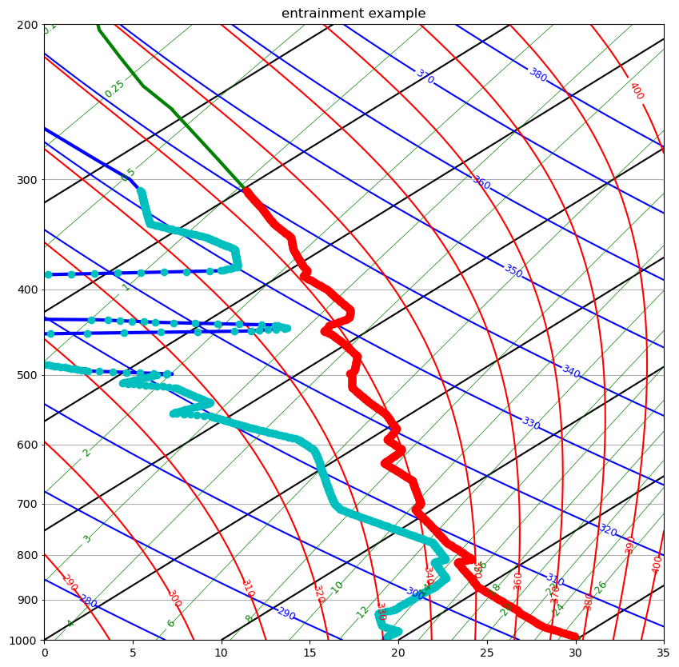

Worksheet 8: Interp1d Solution#
This worksheet is part 1 of Assignment 6 and is due with the rest of the assignment on March 12.
Download worksheet8_interp1d.ipynb
Modify a copy of the entraining_plume.ipynb notebook to add a new function called calc_interp
that contains the following lines from integ_entrain
press = df_sounding['pres'].values
height = df_sounding['hght'].values
temp = df_sounding['temp'].values
dewpoint = df_sounding['dwpt'].values
#
# the nudge function moves any identical heights slightly up or down
# to avoid breaking the interpolation
envHeight= nudge(height)
interpTenv = interp1d(envHeight,temp)
interpTdEnv = interp1d(envHeight,dewpoint)
interpPress = interp1d(envHeight,press)
The signature should look like this:
def calc_interp(df_sounding):
and it should return the three interperlators interpTenv, interpTdEnv, interpPress.
Check the accuracy of the interpolaters by adding the interpolated soundings onto the environmental sounding plot as a series of large dots. Are the interpolaters accurately mapping the jagged changes in the temperature and depoint with height?
Solution#
Since I have the sounding data in the netcdf file written by the entraining_plume notebook, I’ll use that below.
from pathlib import Path
import xarray as xr
from a405.skewT.nudge import nudge
from scipy.interpolate import interp1d
import numpy as np
def calc_interp(entrain_ds):
press = entrain_ds['env_press'].values
envHeight = entrain_ds['env_height'].values
temp = entrain_ds['env_temp'].values
dewpoint = entrain_ds['env_dewpoint'].values
emvHeight = nudge(envHeight)
interpTenv = interp1d(envHeight,temp)
interpTdEnv = interp1d(envHeight,dewpoint)
interpPress = interp1d(envHeight,press)
return interpTenv,interpTdEnv,interpPress
in_file = Path() / "little_rock_july_9.nc"
if not in_file.exists():
raise Exception(f"missing input file {in_file.absolute()}")
entrain_ds = xr.open_dataset(in_file)
entrain_ds
<xarray.Dataset> Size: 10kB
Dimensions: (time: 94, envlevs: 93)
Coordinates:
* time (time) float64 752B 0.0 0.3197 3.517 ... 893.5 903.5 913.5
press (time) float64 752B ...
cloud_height (time) float64 752B ...
* envlevs (envlevs) int64 744B 0 1 2 3 4 5 6 7 ... 86 87 88 89 90 91 92
Data variables:
wvel (time) float64 752B ...
thetae_cloud (time) float64 752B ...
rt_cloud (time) float64 752B ...
cloud_temp (time) float64 752B ...
env_height (envlevs) float64 744B ...
env_thetae (envlevs) float64 744B ...
env_temp (envlevs) float64 744B ...
env_dewpoint (envlevs) float64 744B ...
env_press (envlevs) float64 744B ...
Attributes:
history: written by entraining_plume.ipynb
entrainment_rate: 0.0015
entrainment_units: s^{-1}
tephigram_skew: 35
sounding_dir: /Users/phil/repos/a405/notebooks/worksheets/little_ro...
sounding_time: [2012 7 9 0]
station: 72340interpTenv,interpTdEnv,interpPress = calc_interp(entrain_ds)
even_height = np.arange(200,9500,10)
even_press=interpPress(even_height)
even_temp = interpTenv(even_height)
even_dew = interpTdEnv(even_height)
press = entrain_ds['env_press'].values
temp = entrain_ds['env_temp'].values
dewpoint = entrain_ds['env_dewpoint'].values
press = entrain_ds['env_press'].values
temp = entrain_ds['env_temp'].values
dewpoint = entrain_ds['env_dewpoint'].values
tephigram_skew = entrain_ds.attrs['tephigram_skew']
from a405.thermo.constants import constants as c
from a405.thermo.thermlib import convertSkewToTemp, convertTempToSkew
from a405.skewT.fullskew import makeSkewWet,find_corners,make_default_labels
from matplotlib import pyplot as plt
fig,ax =plt.subplots(1,1,figsize=(10,10))
corners = [0, 35]
ax, skew = makeSkewWet(ax, corners=corners, skew=tephigram_skew)
xcorners=find_corners(corners,skew=skew)
ax.set(xlim=xcorners,ylim=[1000,200])
ax.set_title("entrainment example")
xcoord_envtemp = convertTempToSkew(temp,press,tephigram_skew)
xcoord_envdew = convertTempToSkew(dewpoint,press,tephigram_skew)
xcoord_even_temp = convertTempToSkew(even_temp,even_press,tephigram_skew)
xcoord_even_dew = convertTempToSkew(even_dew,even_press,tephigram_skew)
ax.plot(xcoord_envtemp,press,'g-',linewidth=3)
ax.plot(xcoord_envdew,press,'b-',linewidth=3)
ax.plot(xcoord_even_temp,even_press,'ro')
ax.plot(xcoord_even_dew,even_press,'co')
[<matplotlib.lines.Line2D at 0x14a974440>]
